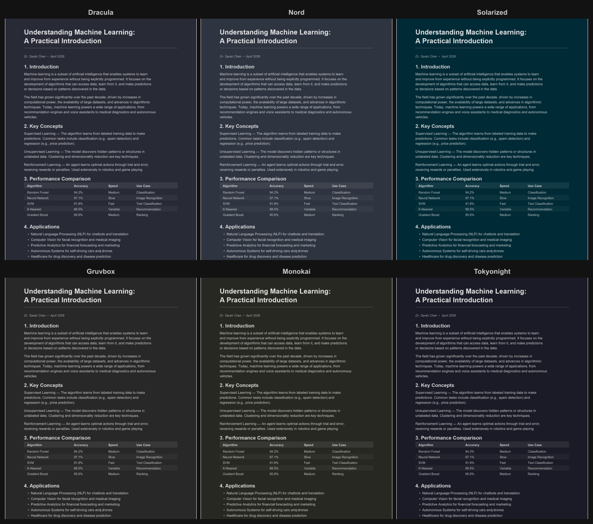
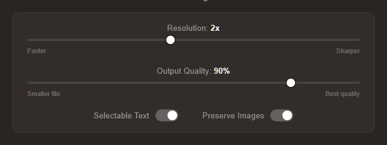
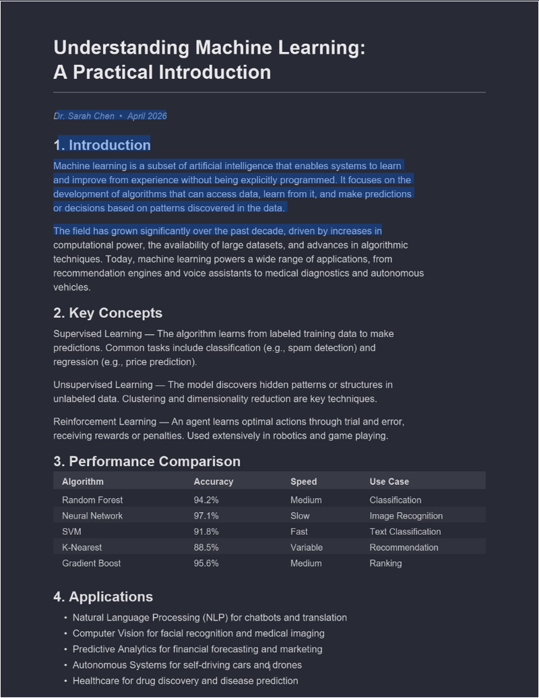

Convertir un PDF en Mode Sombre en Ligne : Gratuit et Instantané
Si vous passez beaucoup de temps à lire des PDF, un fond sombre peut faire une différence notable. Les pages blanches et lumineuses sont agressives pour les yeux, surtout pendant les longues sessions d'étude ou la lecture nocturne. La bonne nouvelle, c'est que vous pouvez convertir n'importe quel PDF en mode sombre directement dans votre navigateur, gratuitement, sans envoyer votre fichier à un serveur.
Comment ça fonctionne
Ouvrez le Convertisseur PDF Mode Sombre, glissez votre PDF sur la page (ou cliquez sur le bouton d'envoi), choisissez un thème et le fichier converti se télécharge automatiquement. Tout le processus prend quelques secondes pour la plupart des documents.
Rien à installer, aucun compte à créer. La conversion s'exécute entièrement sur votre appareil via votre navigateur et votre GPU, donc votre fichier reste privé.
Choisissez parmi plus de 16 thèmes
La plupart des outils en ligne de mode sombre pour PDF vous offrent trois ou quatre options de couleur. Ce convertisseur inclut plus de 16 thèmes soigneusement sélectionnés :
- Dracula, Nord, Solarized, Monokai, Tokyo Night et d'autres thèmes populaires de développement
- Classic Inversion pour un fond noir simple
- Sepia, Forest Green, Midnight Blue pour des rendus plus doux
- Une option Personnalisé où vous pouvez saisir n'importe quelle couleur hexadécimale

Vous pouvez aussi basculer entre une sortie sombre et claire. Si vous préférez un fond clair teinté plutôt que sombre, le sélecteur de couleur personnalisé le permet aussi.
Réglez la qualité et la résolution
Dans les Paramètres Avancés, vous trouverez deux curseurs :
- Résolution (0,5x à 4x) : des valeurs plus élevées produisent des pages plus nettes, des valeurs plus basses maintiennent un fichier plus léger
- Qualité JPEG (60 % à 100 %) : contrôle le niveau de compression de chaque page
Les valeurs par défaut conviennent bien aux documents courants. Si vous convertissez un manuel avec du texte petit, monter la résolution à 3x vous donnera une sortie nette.

Texte sélectionnable dans le fichier de sortie
Le PDF converti inclut une couche de texte invisible sous les images de page. Cela signifie que vous pouvez sélectionner, copier et rechercher du texte dans le fichier de sortie, exactement comme dans un PDF normal. Cela fonctionne dans tous les principaux lecteurs PDF sans étape supplémentaire. Pour analyser en profondeur le fonctionnement de cela et pourquoi la plupart des autres outils le détruisent, voir Texte Sélectionnable dans les PDF en Mode Sombre : Pourquoi la Plupart des Outils le Cassent.

Pourquoi ne pas simplement utiliser une extension de navigateur ?
Les extensions de mode sombre pour navigateur sont conçues pour les pages web. Elles ont souvent des problèmes avec les PDF parce que les lecteurs PDF affichent le contenu différemment (généralement dans un élément canvas). Le résultat est incohérent : certaines pages s'affichent bien, d'autres ont des images inversées ou des couleurs cassées.
Un convertisseur dédié applique la transformation de couleur à chaque page individuellement et produit un fichier PDF standard qui s'affiche de la même manière partout où vous l'ouvrez.
Pour des conseils spécifiques par plateforme, consultez nos guides pour Chrome, Windows, Android et iPad.
Prêt à essayer ? Ouvrez le Convertisseur PDF Mode Sombre et convertissez votre premier PDF en quelques secondes. Gratuit, privé, sans inscription.
Questions Fréquentes
La conversion s'exécute entièrement sur votre appareil via votre navigateur et votre GPU. Votre PDF n'est jamais envoyé à un serveur.
Non, le contenu du texte reste identique. Le convertisseur ne change que les couleurs de fond et de texte tout en préservant le texte consultable et sélectionnable.
Oui, le convertisseur propose plus de 16 thèmes dont Dracula, Nord, Solarized, Monokai et un sélecteur de couleur personnalisé pour n'importe quelle teinte souhaitée.